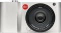
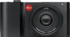

器材库 > APS及其以下画幅可换镜头数码相机 > T

规格总览
产品类型
APS画幅可换镜头数码相机
发布日期
2014-04-24
影像规格
影像传感器
CMOS
影像传感器尺寸
23.6×15.7mm
总像素
1650万
有效像素
1630万
静态图像尺寸
[JPEG] 4928×3264, 4272×2856, 3264×2160, 2144×1424, 1632×1080 [DNG] 4944×3278
静态图像格式
JPEG, DNG, DNG+JPEG
静态图像质量
JPG最佳画质、JPG高画质、DNG+JPG最佳画质、DNG+JPG高画质
画幅比
3:2
短片尺寸
1920×1080p、30fps 或 1280×720p、30fps
短片格式
MP4
镜头和对焦
镜头卡口
Leica T
对焦系统类型
对比度自动对焦
对焦模式
1点、多区、点测光、脸部辨识、触摸自动对焦
曝光控制
测光模式
中央重点测光, 点测光, 矩阵测光
曝光模式
P（程序自动曝光）, 场景选择, A（光圈优先自动曝光）, S（快门速度优先自动曝光）, M（手动测光曝光）
场景模式
海景及雪地, 烛光, 日落, 人像, 风景, 运动, 夜间人像, 烟火景色, 自动
快门速度
30秒到1/4000秒
闪光同步速度
1/180秒
曝光补偿
±3EV以1/3EV级调整
自动包围曝光
一次拍三张分级曝光±3EV的照片1/3EV曝光值
ISO感光度
自动，ISO 100 - ISO 12500
白平衡
日光, 多云, 闪光灯, 色温调节, 阴影, 自动, 卤素灯, 手动
自拍
12秒, 2秒
连拍
约5张/秒
闪光灯
内置闪光灯
弹出式
闪光模式
自动, 减轻/消除红眼, 自动+红眼减轻
闪光指数
ISO感光度为100时：4.5
闪光补偿
±3EV以1/3EV级调整
取景器/显示屏
LCD类型
TFT LCD
LCD尺寸
3.7英寸
LCD像素
130万
LCD特性
触摸屏
文件输入/输出
存储卡
SD/SDHC, SDXC
无线功能
Wi-Fi
电源
电池
锂离子充电电池徕卡BP-DC13，额定电压7.4V，容量1040mAh
续航能力
约400张照片
外接电源
充电器徕卡BC-DC13
机身规格
材质
机身由坚固的铝合金制成
颜色
银色, 黑色
尺寸
134×69×33mm
重量
不含电池339g / 384g
其它
配件端口
热靴, 脚架螺丝孔
附件
背带，2个用于取下背带的背带解锁销，充电电池BP-DC13，带6个转换器插头的充电器BC-DC13，USB连接线
软件
Adobe Photoshop Lightroom，Leica T App for iOS
该产品暂无存档的网友点评
产品图 / 样片
leica T

leica T